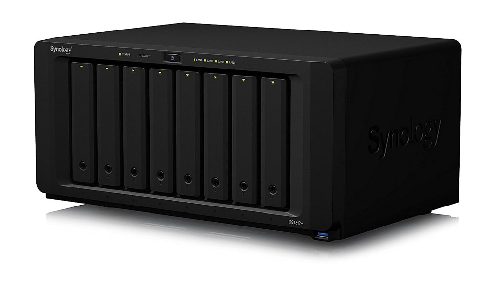
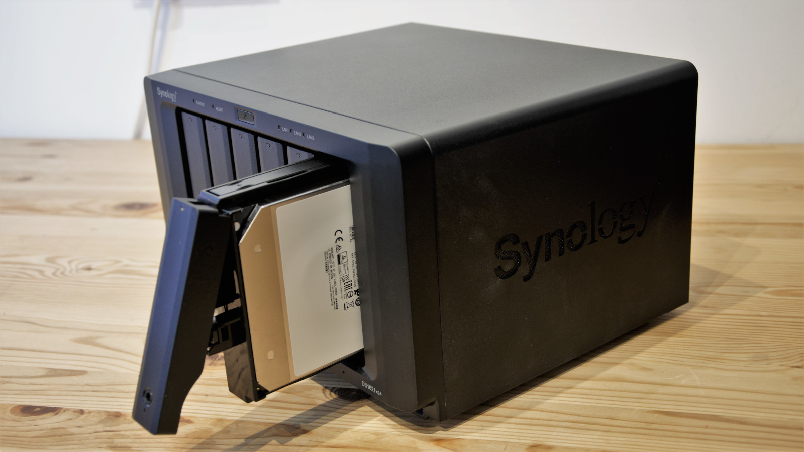

Linux Administration
reference book found here
UNIT I
- Managing users and Managing groups [cached]
- Managing permissions [cached]
-
Managing passwords
[cached]
$ sudo passwd [username] [parameter]Here are some comman parameter used to manage passwords
- -S = See the STATUS of the user account password
- -l = used to LOCK the user password
- -u = to UNLOCK the user account password
- -d = to DELETE the password (user will login the account without password)
- -e = immedatly EXPIRE the password. force user to change the password by expiring user password
- -n = user won't able to change the password before the NUMBER given with -n
- -x = the MAX number of days remain valid after that user got promt to change the password
- -w = get WARN by receiving warnings that the password will expire.
- -i = account get expire if user INACTIVE or didn't change the password after the expire time
-
Granting
system Administrator privileges to regular user
[cached]
Two way to grant Administration privileges
- by adding user in sudo or wheel group
- by editing /etc/sudoers file and add line [username] ALL=(ALL) ALL
$ sudo usermod -a -G wheel [username]or
$ sudo usermod -a -G sudo [username]$ sudo nano /etc/sudoers -
Disk Quotas
[cached]
Quotas are used to limit the amount of disk space a user or group can use on a filesystem. Without such limits, a user could fill up the machine’s disk and cause problems for other users and services.
-
Installing the Quota Tools
-
Updating filesystem mount options
-
checking and enabling quotas
- u: specifies that a user-based quota file should be created
- g: indicates that a group-based quota file should be created
-
Using quotas
- Set a User Quota
- By using edquota
- By using setquota
- Generating quota report
- Setting up the grace period
Install the quota package by using your linux distrubution package manager i.e apt, yum or dnf and pacman, here is an example of installing of quota package on debian distro using apt
$ sudo apt install quotaTo activate quotas on a particular filesystem, you need to mount it with a few quota-related options specified. You can do this by updating the filesystem’s entry in the /etc/fstab configuration file
Update the line pointing to the root filesystem by replacing the defaults option with the appending usrquota,grpquota options using nano or vim editor
# / was on /dev/sda1 during installation
UUID=e89ac59c-bad7-4da2-aa9a-537fea9a646e / ext4 errors=remount-ro,usrquota,grpquota 0 1Remount the filesystem to make the new options take effect
$ sudo mount -o remount /Before finally turning on the quota system, you need to manually run the quotacheck command once
$ sudo quotacheck -ug /This command creates the files /aquota.user and /aquota.group. These files contain information about the limits and usage of the filesystem, and they need to exist before you turn on quota monitoring
Now Enable or turn on the quota system
$ sudo quotaon -v /There are a few ways you can set quotas for users or groups. Here, you’ll go over how to set quotas with both the edquota and setquota commands
Use the edquota command to edit quotas
$ sudo edquota -u [username]The -u option specifies that this is a user quota you’ll be editing. If you’d like to edit a group’s quota instead, use the -g option in its place.
Save and close the file. To check the new quota you can use the quota command
$ sudo quota -vs [username]Unlike edquota, setquota will update your user’s quota information in a single command, without an interactive editing step. You will specify the username and the soft and hard limits for both block- and inode-based quotas, and finally the filesystem to apply the quota to
$ sudo setquota -u [username] 500M 700M 0 0 /To generate a report on current quota usage for all users on a particular filesystem, use the repquota command
$ sudo repquota -s /You can configure the period of time where a user is allowed to float above the soft limit. Use the setquota
$ sudo setquota -t 864000 864000 / -
UNIT IV
-
Choosing a Backup Strategy
Creating Backup is essential in linux. The cost of not having backups is the loss of your critical data. Re-creating the data from scratch costs time and money, and if the cost of doing it all again is greater than the cost associated with backing up, you should be performing backups.
Some common resons why data lose occurs
- hardware fails and causes data loss
- you accidentally delete or over- write a original file
- Some data loss occurs as a result of natural disasters and other circumstances beyond your control such as a tornado, flood, earthquake or fire Your data, as well as the hardware, would likely be destroyed in such a disaster
- Backup Levels
-
full backup or backup level 0
-
Differential Backup or backup level 1
-
incremental backup or level 2...finite
-
Simple Strategy
-
Full Backup on a Periodic Basis
-
Full Backups with Incremental Backups
- Mirroring Data or RAID Arrays
- RAID 0
- RAID 1
- RAID 4
- RAID 5
- RAID 6
- RAID 10
- RAID 01
full backup is also know as level 0 which you take a full backup of the entire file usually on every months depends on sysadmin.
Differntial backup also known for backup level 1. This type of backup involves backing up data that was created or changed since the last full backup from level 0.level 1 backup usually on every week.
backups will only store changes that were made or added to the previous backup from previous level backup such as backup level 2. level 2 backup usually on every day.
some of strategies on taking backup as follows
In this Strategy we take backup of the configurations files on a usb-stick, you should archive each user’s home directory, as well as the entire /etc directory. Between the two, that backup would contain most of the important files for a small system. Then you can easily restore this data from the backup media device you have chosen, after a complete reinstall of Fedora, if necessary.
This backup strategy involves a backup of the complete file system on a weekly, biweekly, or other periodic basis
a tools like timeshift developed by linuxmint can be used to take a snapshot
This scheme involves performing a full backup of the entire system once a week, along with a daily incremental backup of only those files that have changed in the previous day.
This backup scheme can be advanced in two ways. In one way, each incremental backup can be made with reference to the original full backup. In other words, a level 0 backup is followed by a series of level 1 backups. The benefit of this backup scheme is that a restoration requires only two tapes (the full backup and the most recent incremental backup).
Modern commercial backup applications such as Amanda and BRU assist in organizing the process of managing complex backup schedules and tracking backup media. Doing it yourself using the classic dump or employing shell scripts to run tar requires that the system administrator handle all the organization himself. For this reason, complex backup situations are typically handled with commercial software and specialized hardware prod- ucts that are packaged, sold, and supported by vendors.
RAID stands for Redundant array of inexpensive disks or redundant array of independent disks that can mirror a disk.
Note that RAID arrays and mirroring systems are just as happy to write corrupt data as valid data. Moreover, if a file is deleted, a RAID array does not save it. RAID arrays are best suited for protecting the current state of a running system, not for providing backups.
RAID can be configure depending on raid type that can be as follows
Standrad Raid level
nested raid level
-
Choosing Backup Hardware and Media
Any device that can store data can be used to back it up. here are some of them
-
Removable Storage Media
-
CD-RW and DVD+RW/-RW Drives
-
USB and Solid-State Drives
- Storage Capacity
- Speed
-
FireWire Drives
-
NAS
CD-RW drives are capable of both reading and writing data to CD-RW discs. They use a laser to write data onto a special type of CD-RW media that can be rewritten multiple times.CD-RW discs typically have a lower storage capacity compared to DVDs. Standard CD-RW discs can hold up to 700 MB of data
DVD+RW/-RW drives can read, write, and rewrite data on both DVD+RW and DVD-RW discs. These discs are similar to CD-RW discs but have a much higher storage capacity.DVD+RW/-RW discs have a much higher storage capacity compared to CDs. Standard DVD+RW and DVD-RW discs can hold up to 4.7 GB (single-layer) or 8.5 GB (dual-layer) of data, offering significantly more space for storing files, multimedia content.
A pen drive, also known as a USB flash drive, thumb drive, is a portable data storage device that uses flash memory and connects to a computer via a USB port
Pendrives come in various storage capacities ranging from a few megabytes to several terabytes. Common sizes include 8GB, 16GB, 32GB, 64GB, 128GB, and 256GB. The choice of capacity depends on the user's storage needs.
Pendrive speeds are usually measured in terms of read and write speeds. Faster speeds result in quicker data transfer between the drive and the computer. Speeds can vary significantly between different pendrive models, with some optimized for faster data transfer, while others may offer more affordable options with slightly slower speeds.
FireWire is a high-speed serial interface standard that was developed by Apple in the 1990s.FireWire (IEEE-1394) hard drives are similar to USB drives; they just use a different inter- face to your computer. Many digital cameras and portable MP3 players use FireWire. Kernel support is available if you have this hardware.
 NAS stands for Network Attached Storage. It refers to a storage device that is connected to a network and provides file-based data storage services to other devices on the network
A cabinet full of hard drives, special software to manage all of drives. These NAS systems are connected to the network and act as a huge (and expensive) mass storage device.
truenas is free and open source either freebsd or linux os can be used as a nas
-
- Copying Files
Copying Files Using tar
- c — Create an archive.
- v — Be Verbose; lists the files processed so we can see that it is working.
- f — Use the filename of the archive will be what follows. (In this case, it is -.)
- - — Use a buffer; a place to hold data temporarily.
Compressing, Encrypting, and Sending tar Streams
Copying Files Using cp
- -d — Dereferences symbolic links (never follows symbolic links) and copies the files to which they point, instead of copying the links.
- -p — Preserves all file attributes if possible. (File ownership might interfere.)
- -R — Copies directories recursively.
Often, when you have only a few files that you need to protect from loss or corruption, it might make better sense to simply copy the individual files to another storage medium rather than to create an archive of them
Using tar is the traditional choice because older versions of cp did not handle symbolic links and permissions well at times, causing those attributes (characteristics of the file) to be lost; tar handled those file attributes in a better manner. cp has been improved to fix those problems, but tar is still more widely used.
One choice for copying files into another location is to use the tar command where you would create a tar file that would be piped to tar to be uncompressed in the new loca- tion.
The file copy techniques using the tar command in the previous section can also be used to quickly and securely copy a directory structure across a LAN or the Internet (using the ssh command).
One way to make use of these techniques is to use the following command line to first compress the contents of a designated directory, and then decom- press the compressed and encrypted archive stream into a designated directory on a remote host
The tar command is used to create, list, and compress the files in the directory named data_folder. The output is piped through the ssh (secure shell) command and sent to the remote computer named remote_host. On the remote computer, the stream is then extracted and saved in the directory named /mybackup_dir. You are prompted for a pass- word to send the stream.
To copy files, we could use the cp command. The general format of the command when used for simple copying is
The -a argument is the same as giving -dpR, which would be
UNIT V
- Setting Up a SSH Server
Using Secure Shell protocol we able to logging into a remote machine for executing commands on a remote machine. It is intended to provide secure encrypted communications between two hosts over a network.SSH provides a secure alternative to traditional, less secure protocols like Telnet and FTP
-
Installation
by default most of the linux distrubution already include ssh package if it didn't we can install it throught the package manager such as apt, yum, pacman and more. installing ssh on debian based system is as follows
$ sudo apt install openssh-server -
Starting ssh service
once it install we need to start the ssh service by typing follwing command
$ sudo systemctl start sshssh demon is now active to see the service is started or maybe got error while starting service can be seen by type following command
$ sudo systemctl status sshto make the service presistant and active on every reboot can be done by the following command
$ sudo systemctl enable ssh -
Remote login as ssh
SSH connections can be done in two ways
-
Password-based Authentication
-
key based authetication
Users can log in using their username and password, just like traditional login methods. However, this method is less secure, and it is recommended to use other authentication methods.
through password we logs into the specified destination, which may be specified as ssh [user]@[ip-address] after that it will ask the password of that user
$ ssh root@192.168.0.10The more secure method involves key pairs – a private key on the client side and a public key on the server side. The server verifies the client's identity using the public key, and the client proves its identity by possessing the corresponding private key.
Users can generate and manage their key pairs using tools like ssh-keygen. ssh-keygen can generate key pairs in various encryption algorithms such as RSA, DSA, ED25519 and ECDSA
$ ssh-keygen -t rsa -b 4096through private key, we logs into the specified destination, which may be specified as ssh [user]@[ip-address] -i [private key location]
first add the public key into server that can be done using following command
$ ssh-copy-id root@192.168.0.10 -i ~/.ssh/id_rsa.pubnow login as a root using ssh
$ ssh root@192.168.0.10 -i ~/.ssh/id_rsa -
-
Configuration
SSH is highly configurable through its configuration file. ssh_config on clients and sshd_config on servers. Users can define various settings, including security parameters, connection options, and more.
-